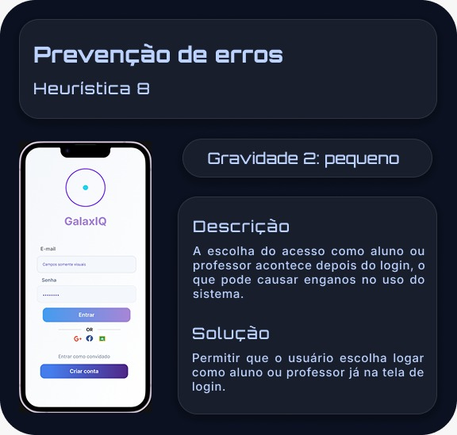
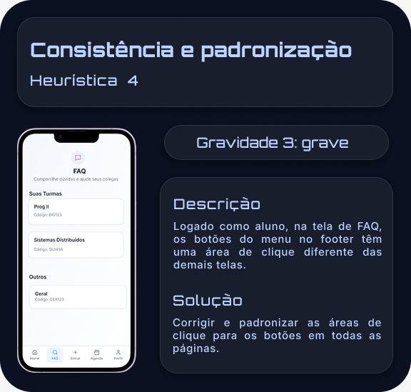
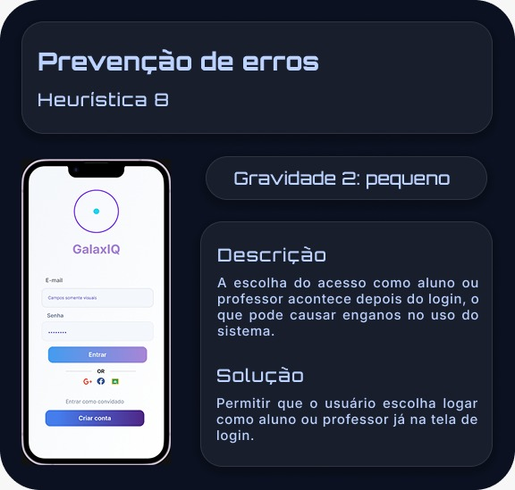
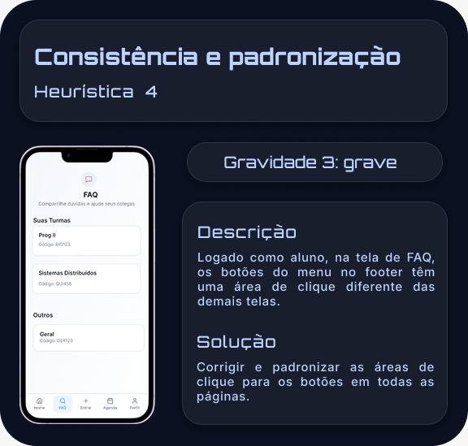
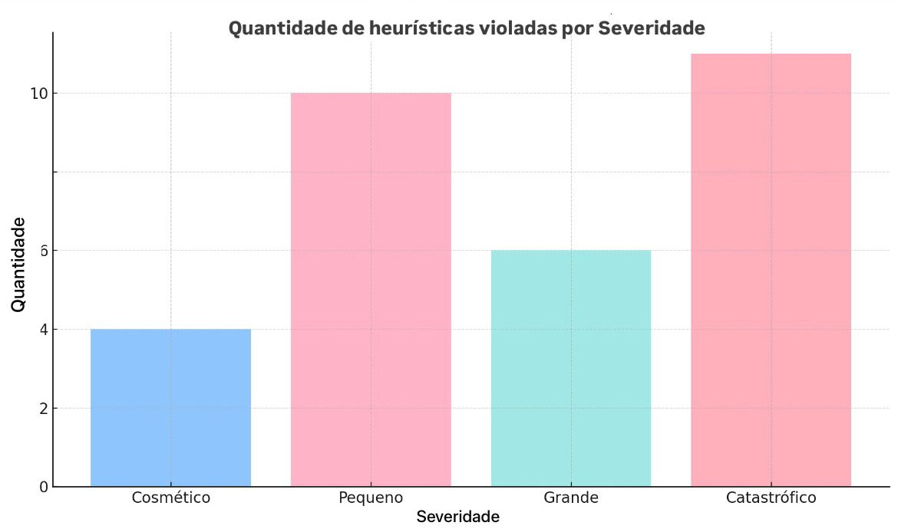
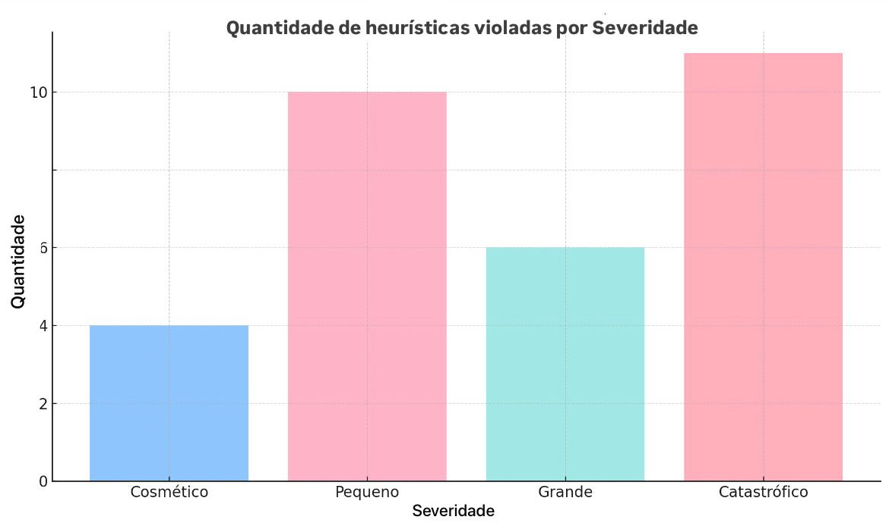
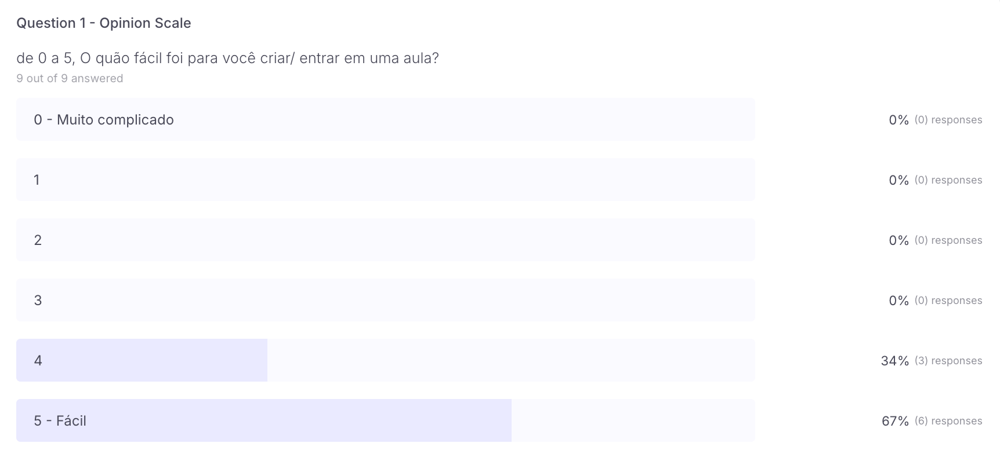
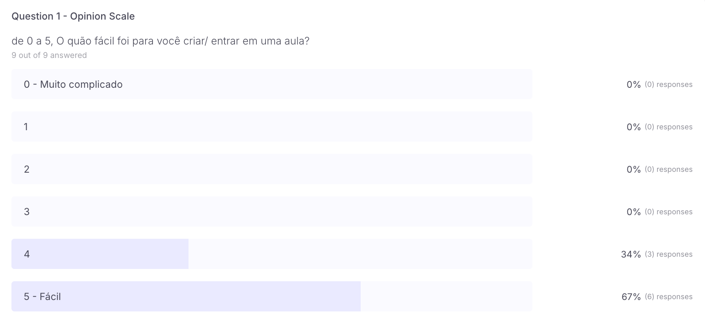

Avaliação Heurística
A Avaliação Heurística é um método de inspeção de usabilidade, especialistas analisam uma interface com base em um conjunto de princípios consolidados, como as heurísticas de Nielsen. O objetivo é identificar problemas estruturais antes de envolver usuários reais, garantindo que o protótipo esteja alinhado a boas práticas de design. Essa técnica permite detectar falhas relacionadas à consistência, visibilidade do status do sistema, clareza de rótulos, prevenção de erros e correspondência entre o sistema e o modelo mental do usuário. Por ser rápida, econômica e eficaz para revelar problemas conceituais, tornou-se etapa fundamental em processos iterativos de design.
 




Insights e gráficos das heurísticas

 

A Avaliação revelou pontos importantes sobre o protótipo. Foram identificadas
inconsistências entre rotas e perfis, mudanças no fluxo de navegação e termos
que dificultavam a interpretação das ações. Também foram observadas falhas na
visibilidade de feedbacks, especialmente em momentos críticos, como envio de
dúvidas ou transição entre turmas.
Outro insight relevante foi a necessidade de reforçar a hierarquia visual em
telas densas, reduzindo sobrecarga cognitiva. Esses achados direcionaram ajustes
essenciais no protótipo antes dos testes com usuários, fortalecendo a clareza,
previsibilidade e coerência da interface.
First Click
O First Click é um método de avaliação que analisa onde o usuário clica primeiro ao tentar executar uma tarefa específica. Se o primeiro clique está correto, as chances de sucesso no restante do fluxo aumentam significativamente. Esse método permite verificar a intuitividade da interface, a clareza dos rótulos e a eficácia da hierarquia visual. Além de fornecer métricas objetivas como tempo até o primeiro clique, taxa de acerto e mapas de calor. o First Click revela padrões de hesitação e dispersão que ajudam a identificar elementos pouco visíveis ou mal posicionados. Por ser rápido e focado em decisões iniciais, é ideal para validar se os caminhos mais importantes estão claros ao primeiro olhar.
Tarefa 1 — Criar Aula

 

Tarefa 2 — Entrar em Sala

Tarefa 3 — Acessar FAQ


Tarefa 4 — Acessar Quiz


Tarefa 5 — Acessar Turma

Percurso Cognitivo
O Percurso Cognitivo é um método de avaliação centrado na perspectiva de um usuário iniciante, utilizado para analisar passo a passo como alguém percorre um fluxo dentro da interface. Em vez de observar usuários reais, o avaliador simula mentalmente o processo de tomada de decisão, verificando se cada etapa de uma tarefa é percebida, compreendida e executada da forma esperada. A análise é feita etapa por etapa, guiada por quatro perguntas essenciais:
1. O usuário entende qual é a meta naquele momento?
2. Ele percebe a ação correta disponível na tela?
3. Ele reconhece que essa ação leva ao resultado desejado?
4. Ele percebe que avançou na tarefa graças ao feedback do sistema?
Ao aplicar essas quatro verificações de forma sequencial ao longo do caminho de uma tarefa, o Percurso Cognitivo permite identificar pontos de confusão, falta de previsibilidade, falhas de feedback e trechos em que o usuário pode não saber como avançar. É um método rápido, acessível e extremamente valioso para refinar fluxos completos antes de envolver usuários reais em testes de usabilidade.Insights do Percurso Cognitivo
A seguir, são apresentados os principais insights obtidos a partir da análise do percurso cognitivo, assim como sugestões de melhorias e ajustes no protótipo, considerando a clareza das ações, feedbacks do sistema e o alinhamento com o modelo mental dos usuários.
Tarefa 1: Fazer Login no Aplicativo
O fluxo de login se mostrou claro e bem estruturado, com campos de e-mail e senha facilmente reconhecíveis e um botão de ação condizente com a expectativa do usuário. No entanto, foi identificado que o momento entre o envio das credenciais e o redirecionamento para a Home apresenta um feedback pouco evidente.
Como sugestão de redesign, recomenda-se a inclusão de um feedback visual mais claro, como um indicador de carregamento ou uma mensagem temporária de validação, reduzindo a insegurança do usuário durante essa etapa.
Tarefa 2: Aluno Entrar em uma Aula
A tarefa de entrada em uma aula apresentou boa correspondência entre a ação executada e o objetivo final. A aba “Entrar” é facilmente identificável no menu principal e o campo de inserção de código é claro e direto.
Apesar disso, foi observado que o feedback após a inserção do código poderia ser mais explícito. Recomenda-se reforçar visualmente esse momento com uma mensagem indicando que o código está sendo validado ou que a entrada na aula foi confirmada.
Tarefa 3: Enviar Feedback / Dúvida (Aluno)
Esse fluxo se destacou positivamente pela sua intuitividade. A pergunta central e o uso de emojis grandes e visuais facilitam o entendimento imediato da funcionalidade, reduzindo a carga cognitiva do usuário.
A opção de envio de dúvidas de forma anônima também se mostrou coerente com o perfil de alunos que possuem dificuldade em se expressar verbalmente. Como melhoria, sugere-se reforçar ainda mais o feedback visual após o envio da dúvida, garantindo a percepção de sucesso da ação.
Tarefa 4: Acessar FAQ da Turma
O acesso ao FAQ apresentou boa previsibilidade e clareza. O nome da aba é direto e compatível com o modelo mental dos usuários, e a organização por turma facilita a navegação.
No entanto, considerando o possível volume de informações, uma sugestão de melhoria seria a inclusão de filtros ou destaque para perguntas mais frequentes, facilitando ainda mais a exploração do conteúdo.
Tarefa 5: Professor Acompanhar Aula
O fluxo voltado ao professor se mostrou eficiente e bem alinhado às necessidades de uso em tempo real. A Home centraliza informações importantes e os gráficos de feedback são apresentados de forma clara e objetiva.
Como sugestão de aprimoramento, recomenda-se explorar feedbacks visuais em tempo real, como animações sutis ou indicadores de atualização, reforçando a percepção de dinamismo e acompanhamento contínuo da turma.
De forma geral, o percurso cognitivo indicou boa clareza das ações, associação correta entre objetivos e resultados e alinhamento com o perfil dos usuários. As principais oportunidades de melhoria concentram-se no reforço de feedbacks intermediários, especialmente em ações que exigem validação do sistema.